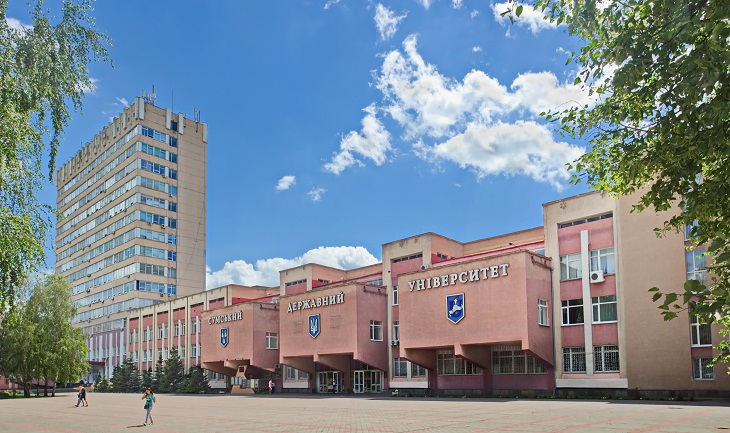

Сумський державний університет, СумДУ
История
Свою історію Сумський державний 1948 року., коли в місті Суми було створено навчально-консультаційний пункт Московського інституту металопромисловості (м. Москва).
Протягом 45 років його розвиток тривав як загальнотехнічного факультету Всесоюзного, а з часом
Українського
заочного політехнічного та Харківського політехнічного
(ХПІ) інститутів. З 1966 р. – як Сумської філії
ХПІ з
денною формою навчання. І вже з 1990 р. зі Сумського фізико-технологічного інституту відбулося
становлення
потужного вищого
навчального закладу з широким спектром інженерно-технічних спеціальностей.
Реалізуючи концепцію вищої
освіти за зразком провідних університетів світу, у 1993 році Сумський
фізико-технологічний інститут було перетворено в Сумський державний університет – університет класичного
типу з
розгалуженою структурою (базовий навчальний заклад, інститути, коледжі, технікуми).СумДУ